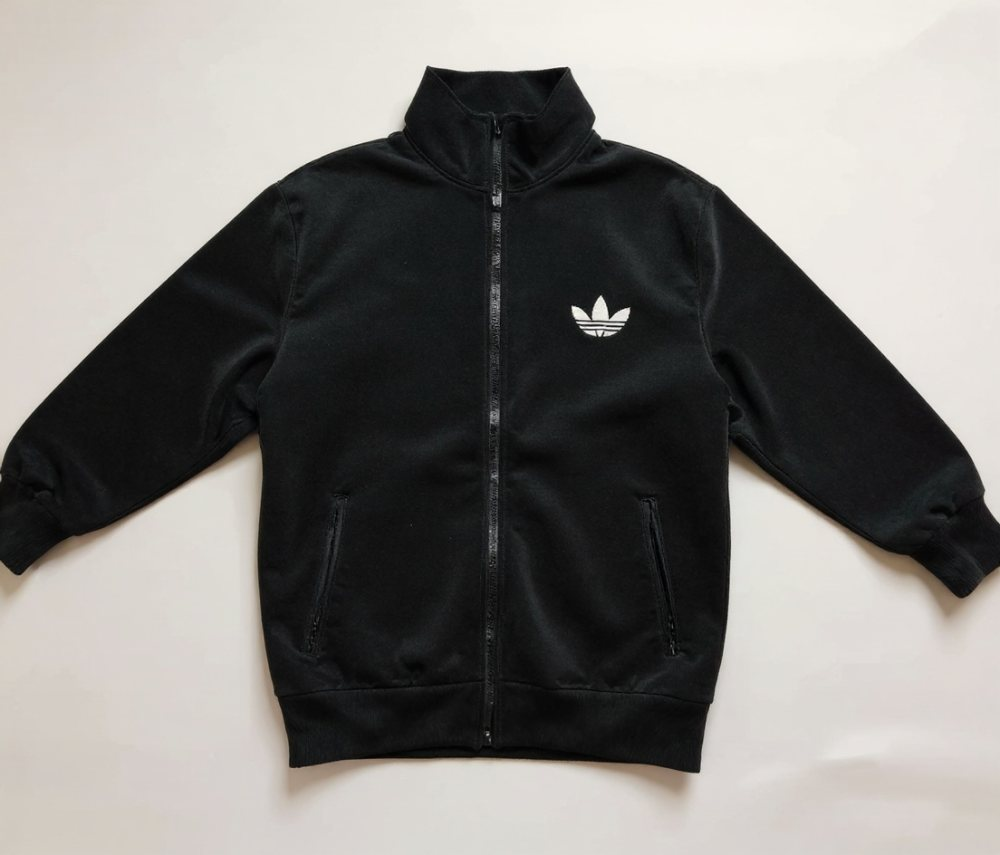
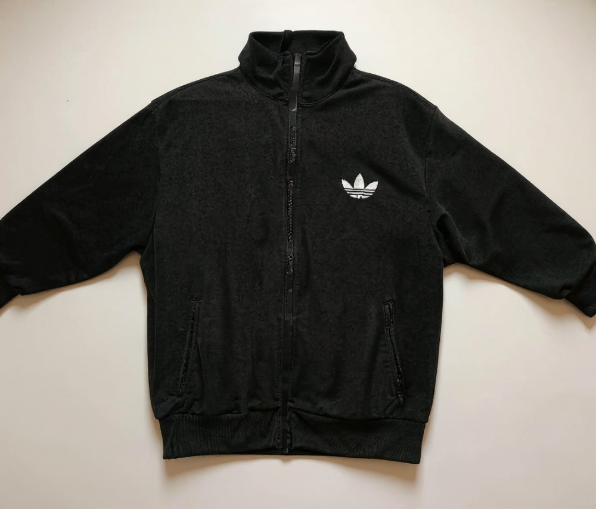
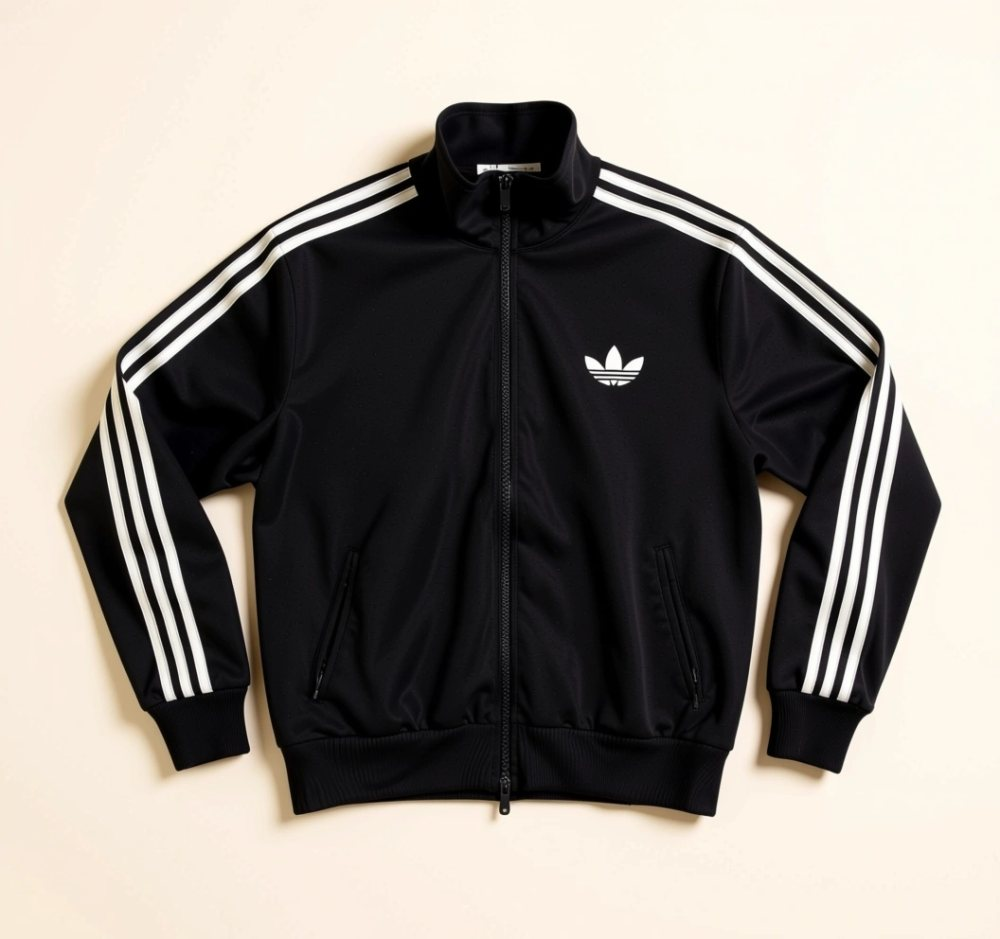
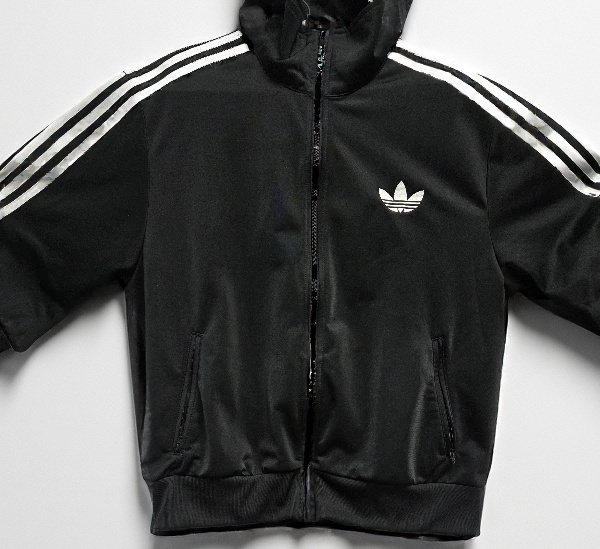

FITSHARE IMAGE EDITING LAB · EXPERIMENT 8
배경을 바꾸면서 옷의 무늬와 모양을 지킬 수 있을까요?
AI 상품 사진을 만들었더니 원래 점퍼에 있던 팔 줄무늬가 사라졌어요. “옷은 그대로 두고 배경만 바꿔 달라”고 프롬프트를 강하게 써도 해결되지 않아, 이미지 편집 모델을 바꾸어 같은 옷 사진으로 비교했어요.
문제와 처음 세운 생각
문제: 생성형 모델은 배경을 바꾸는 동안 옷도 다시 그릴 수 있어요. 이번 점퍼에서는 두 FLUX Kontext 결과 모두 팔의 흰 줄무늬가 없어졌어요.
생각: 옷을 설명하는 문장을 더 분명하게 쓰고, 편집 영역을 투명 배경으로 한정하는 마스크 기반 모델을 쓰면 옷의 디자인을 더 잘 남길 수 있을 거예요.
비교에 사용한 같은 옷 사진
투명 배경으로 분리한 점퍼 한 벌을 각 모델에 입력했어요. 바뀐 조건은 모델과 프롬프트예요. 이 비교는 사진 한 장의 탐색 결과라서 모든 옷에서 같은 결과가 난다고 볼 수는 없어요.

무엇을 바꾸어 비교했나요?
| 방법 | 바꾼 점 | 이번 사진에서 본 결과 |
|---|---|---|
| FLUX Kontext Pro · 처음 프롬프트 | 옷의 모양과 세부를 유지하고 배경·조명 변경 | 팔 줄무늬가 사라졌어요. |
| FLUX Kontext Pro · 강화 프롬프트 | 로고·무늬·재봉선·지퍼까지 바꾸지 말라고 구체적으로 지시 | 팔 줄무늬가 여전히 사라졌어요. 문장만 강하게 써도 보장되지 않았어요. |
| Qwen Image Edit Plus | 같은 옷 사진에 배경만 바꾸고 줄무늬를 그대로 두라고 지시 | 줄무늬는 보였지만 소매가 접힌 모양으로 바뀌어 점퍼의 실루엣과 자세가 달라졌어요. |
| FLUX Fill Pro · 투명 영역 마스크 | 투명한 배경 영역을 채우고 불투명한 옷 영역은 보존하도록 지정 | 이번 사진에서는 줄무늬와 펼친 형태가 가장 잘 남았어요. |
prompt = (
"Use the transparent alpha area as the only editable area. "
"Fill only the transparent background with a warm off-white studio surface. "
"Preserve every opaque garment pixel, including stripes, logo, shape, pose, and details."
)
input = {"image": cutout_url, "prompt": prompt, "output_format": "jpg"}결과 사진을 나란히 확인해요




이번 실험에서 배운 점
프롬프트만으로 옷 디자인을 지키기는 어려웠어요. 두 FLUX Kontext 결과에서 팔 줄무늬가 모두 없어졌고, Qwen 결과는 줄무늬를 살렸지만 점퍼의 모양을 바꿨어요.
투명 배경을 편집 영역으로 주는 FLUX Fill Pro가 이번 사진에서는 가장 나았어요. 그래서 다음 개선 대상으로 투명 마스크를 활용하는 방식을 선택했어요. 다만 사진 한 장의 결과이므로 다른 옷에서도 항상 세부가 유지된다고 단정하지 않아요.
AI 결과는 상품 정보와 치수를 확인하는 자료가 아니에요. 원래 옷의 디자인을 확인할 때는 보관된 원본 사진을 함께 보세요. 새 모델의 안내 가격은 이미지 1장당 약 US$0.05예요.
모델 안내
가격과 입력 방식은 모델 제공처의 안내를 참고했어요: FLUX Fill Pro · Qwen Image Edit Plus.
실험 흐름으로 돌아가기 →